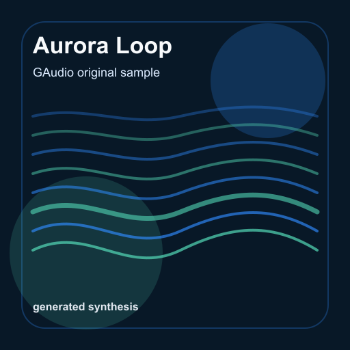

gaudio
MOTION STUDY / REAL AUDIO基础柱状频谱。
32 根紫色柱条，从左到右对应低频到高频。数值越高，柱条越亮，光晕越明显；暂停后平滑回落。
AUDIO SPECTRUM / 32 BANDSidle
低频中频高频

Aurora LoopGAUDIO ORIGINALS · 8 SECOND LOOP
0:00 / 0:08
FFT / 255BASS FRAME
使用 gaudio 的真实音频频谱，以 Canvas 2D 绘制。可以切换样例、调节音量，或启用减少动态。